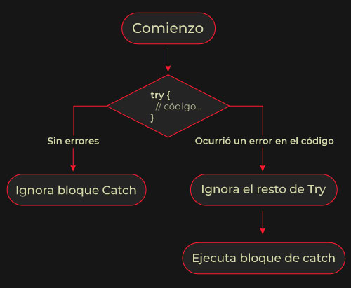
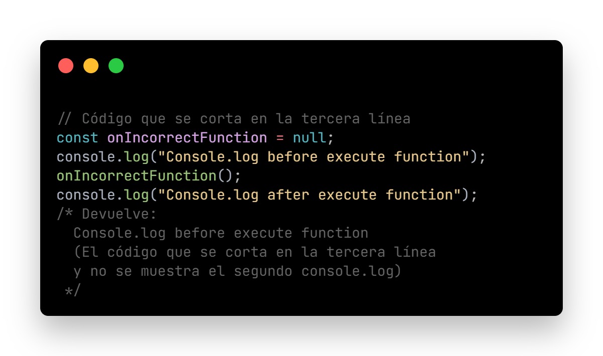
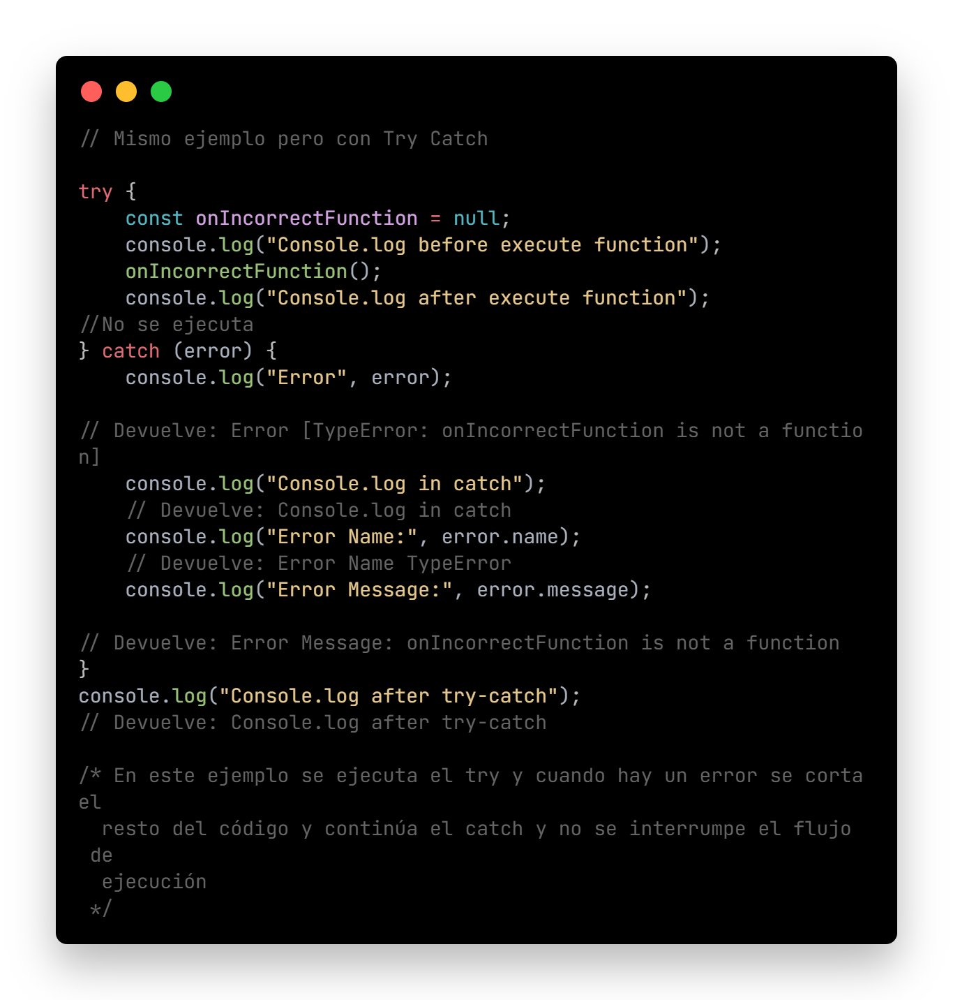
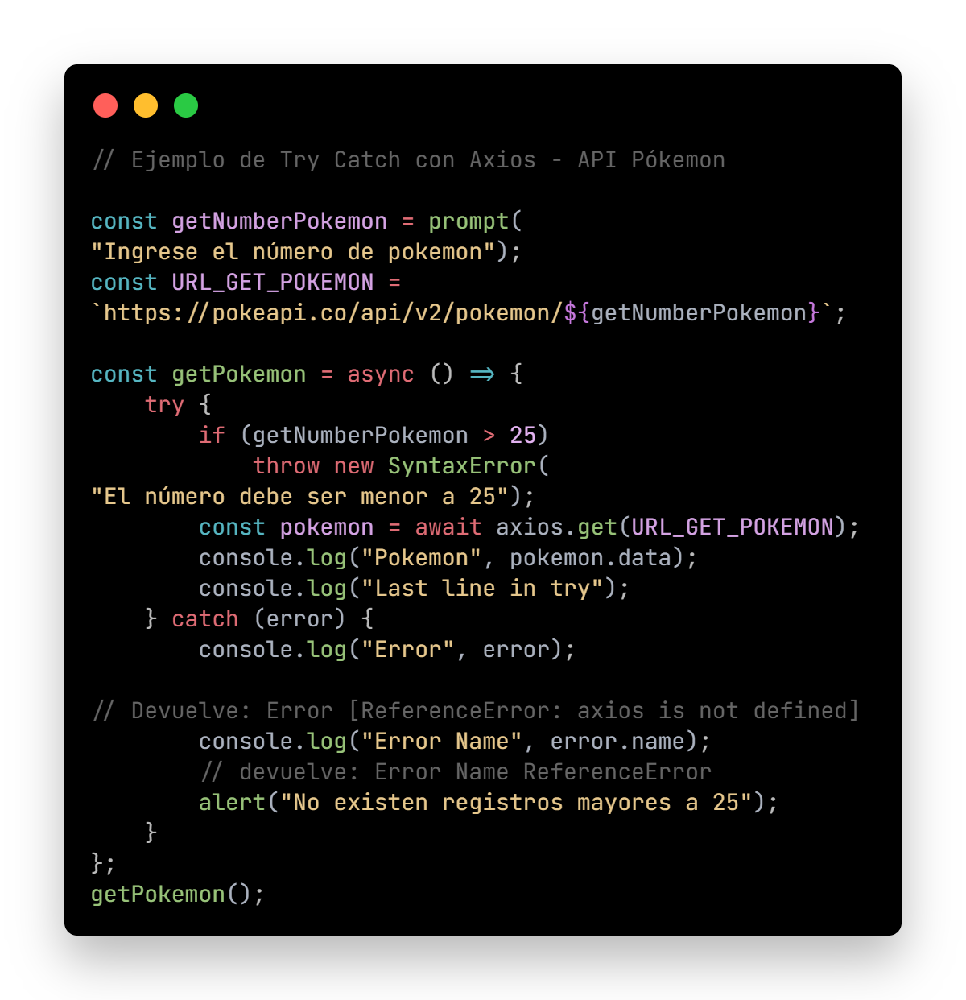

Try Catch
Clase 13 - 08/08 - Link clase 13 - YouTube
Temas:
- Errores
- Qué genera un error
- Try Catch
En archivo .js:
- Ejemplos con Try Catch
- Ejemplo Try Catch con API Pókemon
Errores
-
Cuando aprendemos a trabajar con asincronismo y a entender de menor a mayor nivel el funcionamiento del Event Loop, podemos ver que pueden llegar a aparecer errores.
Además, siempre debemos considerar si los tipos de datos o las funciones están bien desarrolladas ya que un algoritmo mal ideado puede trabar el hilo de ejecución.
Qué genera un error
- Una falla con el servidor que provee el servicio.
- Un ingreso inesperado por parte de nuestro grupo de users.
- Un algoritmo pensado incorrectamente.
Try catch
- Son dos bloques de código que nos permitirán controlar la forma en que se ejecuta nuestro script.
- Dentro del Try guardaremos el código que intentaremos que se ejecute para lograr un comportamiento.
- Dentro del Catch capturaremos los errores y los manipularemos.
- Si pasa el Try, ignora lo que contenga el Catch. 
-
El Catch será quien se encargue de ejecutar una fracción de código que está realizada con el error. Al menos cuenta con dos propiedades: name y message. Generalmente, son un buen punto de partida para pensar en la UX.
También podemos gestionar un nuevo error a través de throw new Error.
* Ver código funcional en archivo ./js/asinchronism3.js
  